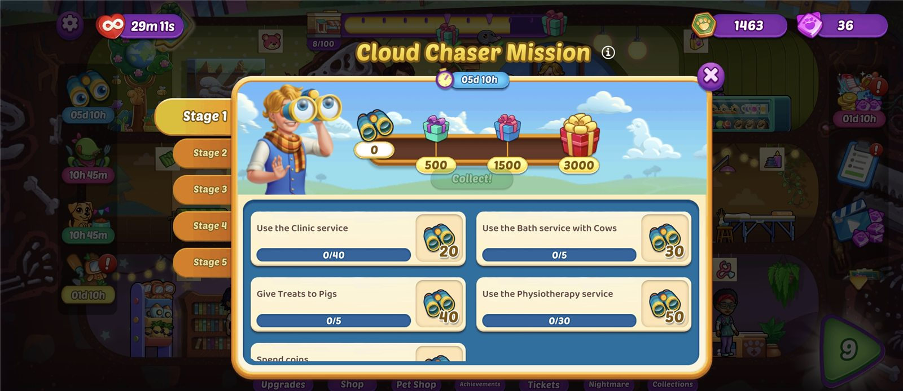
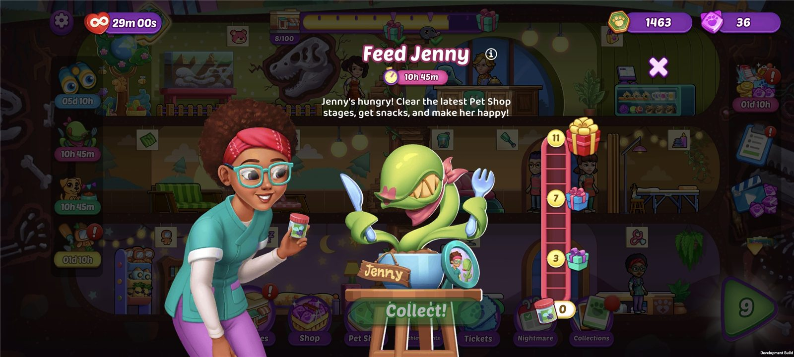
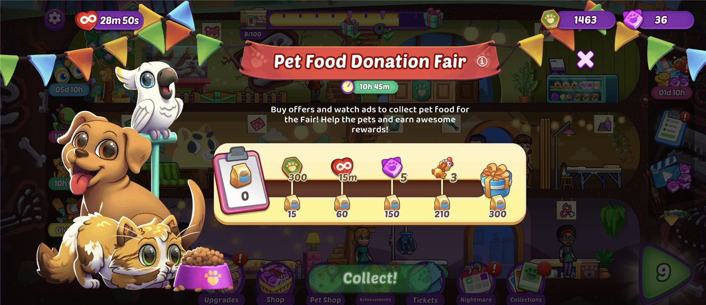
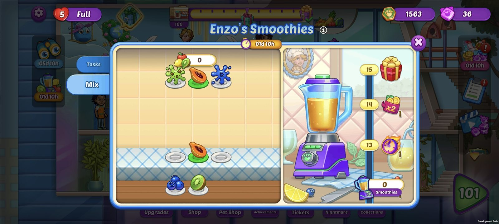
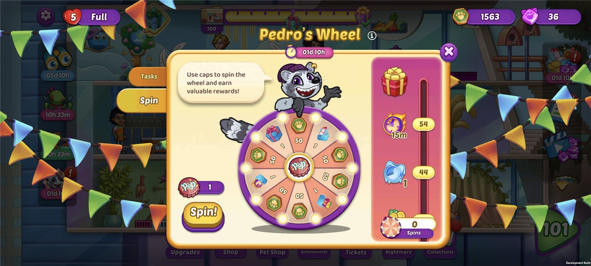
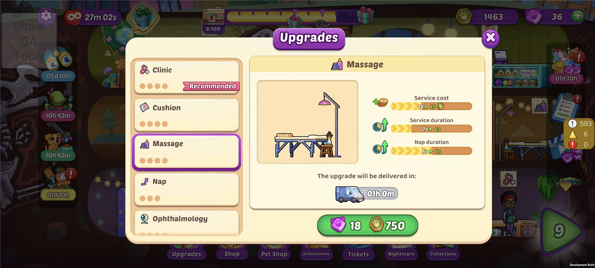
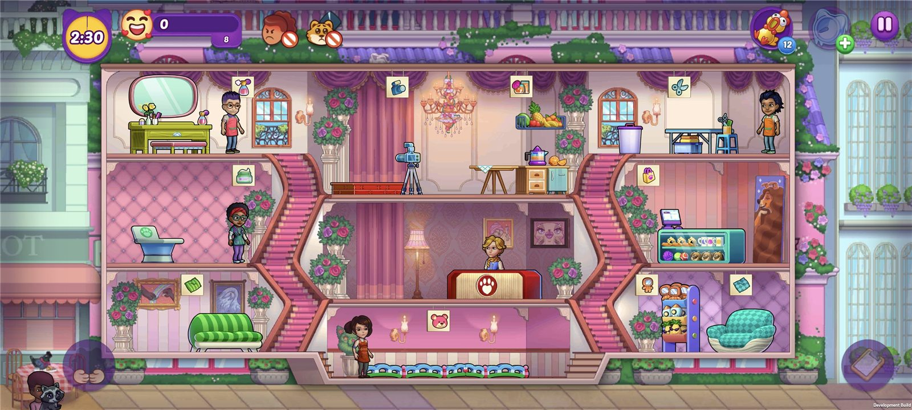
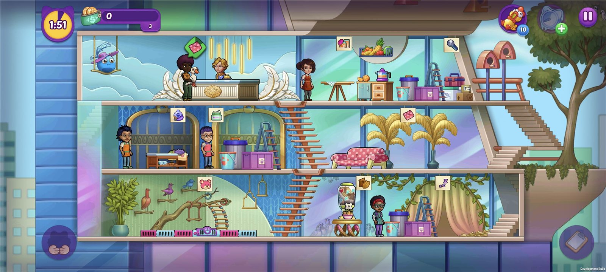
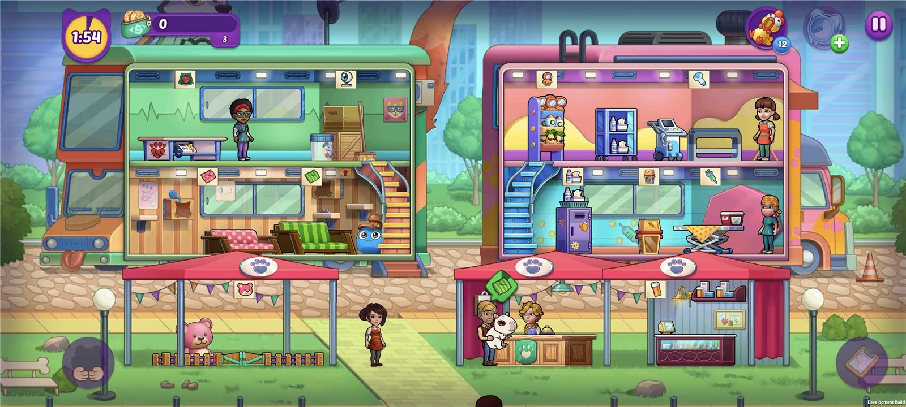
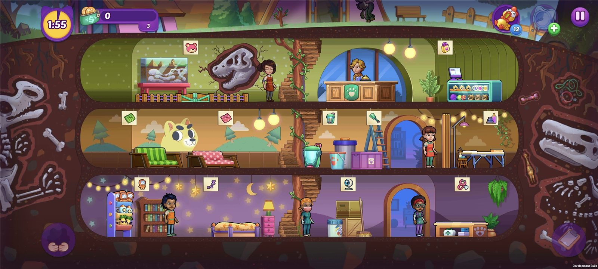

Pet Shop Fever is a free-to-play time-management game. Players run busy pet shops, bathing, grooming and feeding animals against the clock, then move on to new themed pet shops with new guests, rare breeds and more than 2,000 levels. Regular limited-time events, card collections and minigames keep it growing.
I joined Pet Shop Fever during its soft launch, as one of two game designers in an 11-person team. As the game grew into a live service, the work shifted from building the core to keeping it growing: new content, events and features, without breaking what already works.
The team's goals changed over time, and usually meant increasing retention, reducing churn, growing monetization and shipping content updates.
Features designed to bring players back every day, to give them long-term goals, and to offer the right help at the right moment.
A series of minigames created to expand the side loop that supports the meta. In a free-to-play game, side loops bring several benefits: they add variety to the main loop, give players more reasons to come back during the day, open extra sources of rewards that feed progression, and create natural moments to offer help or an offer.





I used upgrades as one of the main balancing tools to make levels challenging. Each improvement changes the cost and duration of a service and comes with a price and a delivery time, so every purchase is a decision. I tuned these values so the player feels progress while the next level still asks for attention and planning, and so the pace of upgrades also ties progression to the economy, which is where offers such as the delivery speed-up fit.

Examples of levels I designed. Each level is a pet shop with its own theme, layout and rhythm, and the level design decisions are visible in the space itself: how many floors and staircases the staff has to cross, where each service station is placed, how far it is from the reception, and how much time the player has. The same elements, arranged differently, create very different challenges, from Pet Beauty Atelier, a mansion with two staircases, to Pet Voyage, a pair of buses, and Burrowing Friends, an underground fossil burrow.




In a live free-to-play game, the team's goals changed over time: retaining players, reducing churn, growing monetization and updating content. The challenge was meeting all of them without losing the player experience. The focus was on:
A live game keeps changing, and every change can help or hurt. To decide with confidence, the testing process followed these steps:
In a live game, design is never a one-time decision: it is a loop of observing, testing and learning.
With more than 2,000 levels, the challenge was the whole progression rather than any single level: players should feel tension, relief, fairness and progress along the entire path. The focus was on:
During the period of work on the project, Pet Shop Fever was one of the company's top 3 most profitable games, in a portfolio of more than 100 titles.
A live game taught me that good design is consistency: test, learn and deliver, cycle after cycle.